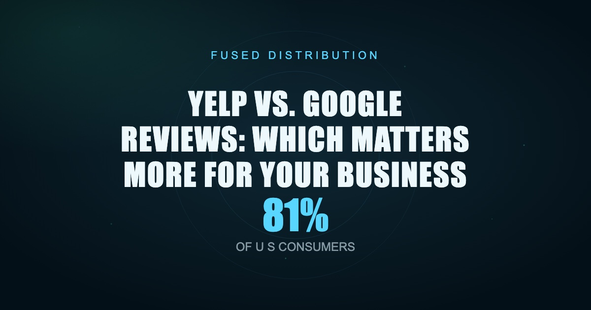

Yelp vs. Google Reviews: Which Matters More for Your Business
Local BusinessMarketing

Google reviews matter more for most small businesses. That's the short answer. But "more" doesn't mean Yelp is irrelevant, and understanding the difference between these two platforms determines where you put your energy when you ask customers for feedback.
Photo by Caio on Pexels
Here's what drives that conclusion, and exactly what to do with it.
Key Takeaways - In 2026, 81% of U.S. consumers use Google specifically to evaluate local businesses through reviews (Source: BrightLocal Local Consumer Review Survey 2026) - Consumers are more than twice as likely to write a Google review as a Yelp review in any given year - Google holds roughly 73% of all online reviews globally, making it the dominant platform for local search visibility - Yelp still holds real value in specific industries, and reviews without written text don't carry the same weight on either platform
Photo by Faruk Tokluoğlu on Pexels
Google Is Where Most Customers Actually Look
In 2026, 81% of U.S. consumers turn to Google when evaluating a local business through reviews (Source: BrightLocal Local Consumer Review Survey 2026). That's not a slim majority. That's four out of every five people who might hire you, eat at your restaurant, or book your service.
Google reviews appear directly in search results, in Google Maps, and inside your Google Business Profile. A customer searching "electrician near me" sees your star rating before they ever reach your website. They see your review count and your most recent review without clicking anything. The decision to call you, skip you, or scroll past starts and often ends right there.
This is why your Google Business Profile isn't optional. It's the first impression for most of your potential customers, and reviews are the loudest signal on that profile.
The Review Volume Gap Between Platforms Is Wide
Here's a number that surprises most business owners: 63% of consumers wrote a Google review in the past year, compared to just 24% who wrote one on Yelp (Source: BrightLocal Local Consumer Review Survey 2026). Your happy customers are far more likely to leave feedback on Google than anywhere else.
That gap matters for two reasons.
First, your Google review count grows faster organically, even without asking. Customers who want to leave a review default to Google because it's where they already are after searching for you.
Second, asking customers for a review is more effective on Google because the friction is lower. Most people have a Google account and stay logged in. Yelp actively discourages businesses from asking for reviews, and their algorithm filters reviews from accounts that don't have a history of activity. Many genuine five-star reviews from real customers simply disappear on Yelp because those customers only signed up to leave you a review.
Our observation: When we help local businesses set up review request systems, Google consistently generates three to five times as many completed reviews as Yelp from the same ask.
Google's Overall Share Makes It the Default Platform
Google accounts for roughly 73% of all online reviews globally (Source: SocialPilot Online Review Statistics 2025-2026). No other platform is close. Facebook sits in second place at a fraction of that. Yelp, despite being a household name, holds a much smaller slice.
That dominance has a direct effect on local search. Google's algorithm uses review signals, including recency, volume, sentiment, and owner responses, as ranking factors for local pack placement. When someone searches for a business category near them, the businesses showing in the top three map results almost always have more Google reviews than competitors who rank lower.
Getting more Google reviews isn't just about social proof. It directly influences whether you appear at all when someone nearby is looking for what you sell.
The practical step here is simple: make your Google review link easy to find and share. Go to your Google Business Profile, click "Get more reviews," and copy the direct link. Send it in follow-up emails, print it as a QR code on your receipts, and text it to customers after a completed job. That single link, handed out consistently, compounds over time.
Does Yelp Still Matter?
Yelp had 22 million new reviews added in 2025, bringing its cumulative total into the hundreds of millions (Source: Yelp Trust & Safety Report 2025). That's real activity, and for certain categories it represents a loyal, high-intent audience.
Restaurants, salons, home services, and healthcare providers tend to have more engaged Yelp audiences than other industries. If you run a restaurant in a mid-to-large city, Yelp users are often making decisions specifically through that platform. Ignoring Yelp entirely in those categories means missing customers who are actively searching.
The right approach isn't to abandon Yelp. It's to stop treating it as equal to Google. Claim your Yelp listing, keep your hours and photos updated, and respond to the reviews you do receive. Just don't pour your energy into asking customers to leave Yelp reviews. Let it collect naturally while you actively build Google.
One industry exception: if your competitors have significantly more Yelp reviews than you and Yelp ranks highly for your category keywords in your city, closing that gap is worth a deliberate effort. Search your own business category in your city and look at what comes up on page one. If a Yelp listing appears above your website, that listing is pulling traffic you're currently missing.
A Star Rating Without Words Carries Less Weight Than You Think
65% of consumers say they don't consider a star rating without any written text to be a "real" review (Source: Yelp Consumer Trust Survey, YouGov, January 2025). This applies everywhere, not just Yelp.
A five-star rating that says nothing doesn't tell the next customer why they should trust you. A four-star rating that says "Fast, friendly, showed up on time, would hire again" does. The difference in conversion rate between a profile full of text-only ratings and one with detailed written reviews is significant.
When you ask customers for a review, don't just ask them to "leave a Google review." Give them a prompt. Something like: "If you have 60 seconds, a quick note about what we did and whether you'd recommend us would mean a lot." That framing produces written reviews instead of star clicks.
The businesses that dominate local search aren't just collecting star ratings. They're collecting stories. A review that mentions your service, your location, and a specific outcome is doing SEO work for you. Google reads review text when evaluating relevance for local searches.
How to Build a Review System That Works
In 2026, 33% of consumers say they always read reviews when browsing for local businesses, up from 29% in 2025 (Source: BrightLocal Local Consumer Review Survey 2026). That number keeps climbing every year. Review habits aren't going away.
Here's a simple system that works for most small businesses:
Step 1: Create your Google review link. Log into Google Business Profile, go to "Get more reviews," and copy the short URL. Save it somewhere accessible.
Step 2: Ask within 24 hours. The best time to request a review is right after you complete work, while the experience is fresh. A text message works well: "Hi [name], thanks for choosing us today. If you're happy with the work, a quick Google review helps us a lot. Here's the link: [URL]." Keep it short. Don't beg.
Step 3: Make it a habit, not a campaign. One review request after every job or transaction adds up faster than a one-time push to all your past customers. Consistency over six months beats a sprint every time.
Step 4: Respond to every review. Google rewards owners who engage. Responding to reviews, especially negative ones, shows potential customers that you pay attention and care about the experience. Keep responses under 100 words. Be direct and professional.
Step 5: Monitor Yelp passively. Check it once a month. Respond to reviews when it makes sense. Don't invest time in asking customers to go there.
Frequently Asked Questions
Does Yelp affect my Google ranking?
No. Yelp reviews don't directly influence your position in Google search results. Google uses its own review data. However, a strong Yelp presence can send referral traffic your way, and a Yelp business page often ranks on its own in Google for your business name.
Can I ask customers for Google reviews?
Yes. Google explicitly allows businesses to ask customers to leave reviews. What you can't do is offer incentives like discounts or free services in exchange for a positive review. Asking directly, without conditions, is both allowed and effective.
How many Google reviews do I actually need?
There's no magic number, but businesses appearing in the local pack in competitive markets typically have at least 30 to 50 reviews. More important than volume is recency. Five reviews from the past 60 days outperform 50 reviews from three years ago in how Google weights your profile.
What should I do about fake negative reviews?
Flag them through your Google Business Profile dashboard. Document why the review appears fake (no matching customer records, suspicious account with no other activity, timing that doesn't match a real transaction). Google's removal process is slow but does work for reviews that clearly violate policy.
If your business is getting found online, Google reviews are doing a large part of that work. The businesses ranking in the top three local results in any category almost always have more recent, detailed Google reviews than whoever sits in fourth place. Start there, build the habit, and let Yelp take care of itself. If you want help setting up a review system or tightening up your Google Business Profile so reviews actually move the needle, that's exactly the kind of local SEO work we do every day.